Tous ces articles en ligne sur Scilab ont été écrits pour
LINUX MAGAZINE FRANCE par les
développeurs du Scilab Group. Les articles sont sous
licence FDL (Free Documentation
Licence)
Scilab : Courbes et Surfaces
1 Introduction
Le graphique de Scilab est basé sur des primitives graphiques dont la
syntaxe d'appel est souvent complexe, à cause de nombreux
paramètres optionnels. On donne ici quelques conseils pour
réaliser les taches les plus simples. Pour des graphiques plus
sophistiqués la lecture des helps en ligne est indispensable... De
manière générale, les sorties graphiques se font en
programmant des fonctions Scilab qui vont établir un environnement
graphique (essentiellement à l'aide des primitives xset et
xsetech) et en faisant appel aux primitives graphiques (fonctions
plot2d, plot3d, etc). Une fois un graphique mis au point, il
est commode de sauvegarder la suite de commandes graphiques dans une fonction
spécifique. On pourra aussi s'inspirer des nombreuses démos
graphiques.
2 Rappels sur l'environnement graphique
Une fenêtre graphique peut être ouverte soit explicitement en
utilisant le menu ``Graphic Window'' de la fenêtre principale de Scilab
soit par l'utilisation d'une fonction graphique. Une fenêtre graphique
correspond à deux entités : une fenêtre physique et un
contexte.
2.1 Fenêtre physique
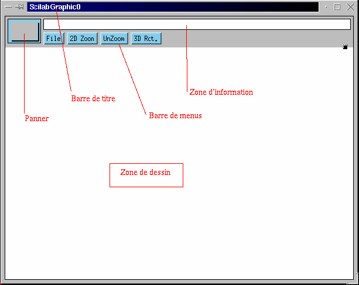
- une zone de titre avec le nom de la fenêtre
- une barre de menus
- une zone d'information
- un panner et/ou des barres de défilement
- une zone graphique
2.2 Contexte
Il s'agit d'un ensemble de données contenant les
propriétés de la fenêtre graphique et les paramètres
de dessin :
- position de la fenêtre physique
- tailles de fenêtre physique et logique
- changement de coordonnées
- propriété des fontes
- type de trait et épaisseur
- table de couleur
- couleur courante, couleur de fond,
- ...
La fonction xset xset@xset est la fonction de base permettant
de fixer les paramètres graphiques. Elle s'utilise en
général sous la forme xset("keyword",value)
où keyword est le mot-clé désignant le
paramètre graphique et value la valeur qu'on désire lui
donner.
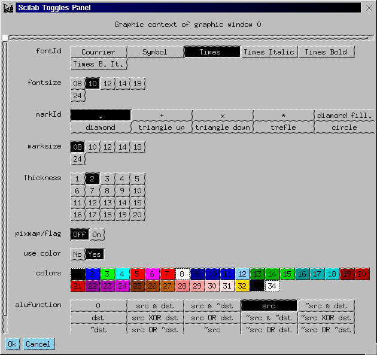
Une même commande graphique peut donc donner des résultats
différents selon les valeurs courantes des paramètres de
l'environnement graphique. Ces paramètres reprennent leur valeurs par
défaut lorsque la fenêtre graphique est fermée (bouton
Close du menu File d'une fenêtre graphique). Par
contre, si fenêtre est seulement effacée (bouton Clear du
menu File d'une fenêtre graphique) les paramètres
graphiques gardent leur valeur courante. La commande
xset("default") restaure les paramètres par
défaut de la fenêtre courante. Pour des applications graphiques
complexes, il peut être nécessaire d'utiliser la fonction
graphique xsetech@xsetech xsetech, qui agit aussi sur
l'environnemnt graphique en établissant des changements de
coordonnées. Il faut noter aussi que, par défaut, les commandes
graphiques se font en mode de superposition. Deux commandes de tracé de
courbes successives donneront donc deux courbes superposées dans la
même fenêtre graphique. Pour que les commandes graphiques ne soient
pas en mode de superposition il faut utiliser la commande xset("auto
clear","on").
3 Tracés 2D
3.1 Tracé des courbes de fonctions y=f(x)
3.1.1 courbe d'une fonction Scilab
function y=f(x),y=abs(sin(x)),endfunction
fplot2d(linspace(0,2*%pi,100),f)
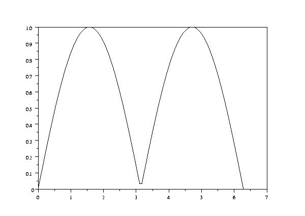
Ce graphique et les suivants ne représentent plus que le contenu de la
zone de dessin. Le menu``2D Zoom'' permet de voir des détails. Il suffit
de cliquer sur ce menu puis de sélectionner un point de la fenêtre
et de déplacer la souris pour définir le rectangle à
zoomer. Ce rectangle sera alors visualisé en utilisant la
totalité de la fenêtre. La figure ci-dessous montre le graphique
obtenu en zoomant une région du graphique précédent:
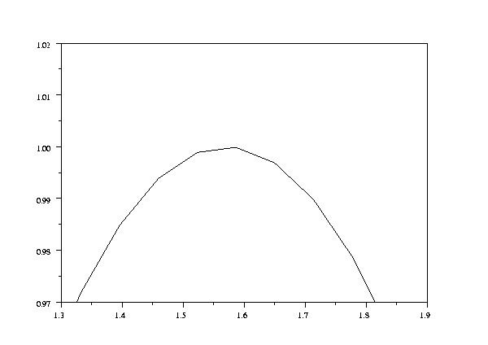
Il est possible de recommencer l'opération pour voir de plus en
plus de détails. Le menu ``UnZoom'' réaffiche le graphique
d'origine.
3.1.2 Courbe d'une fonction tabulée
Très souvent la fonction est représentée par un ensemble
de données (x(i),y(i)). La fonction plot2d peut être
utilisée dans ce cas:
p=linspace(0,10,100) ;
x=p.*sin(p) ;
y=p.*cos(p) ;
xbasc() ;plot2d(x,y)
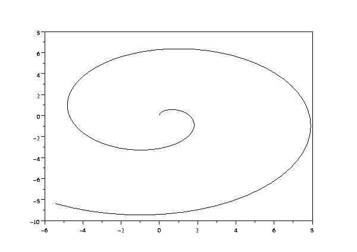
3.1.3 Tracé de plusieurs courbes
L'utilisateur souhaite souvent dessiner plusieurs courbes dans la même
fenêtre pour comparer leurs évolutions. Deux situations
différentes peuvent être rencontrées:
- toutes les données d'ordonnées y correspondent
à la même discrétisation des abscisses x
x=linspace(0,2*%pi,100) ;
y=[sin(x)', sin(2*x-1)'] ;
xbasc() ;plot2d(x,y)
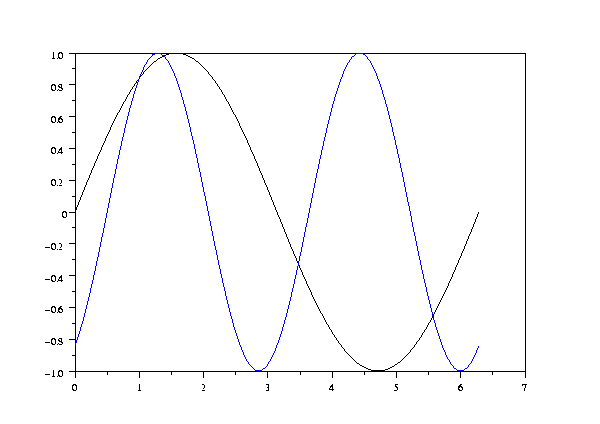
Noter que chaque courbe correspond à une colonne de la matrice
y. Chaque courbe est tracée avec une couleur différente.
- chaque fonction a sa propre discrétisation des abscisses, on
appelle plusieurs fois la fonction plot2d :
x1=linspace(0,2*%pi,100) ;
x2=linspace(0,2*%pi,10) ;
xbasc() ;
plot2d(x1,sin(x1),style=5)
plot2d(x2,sin(x2)+rand(x2)/10,style=-2)

Noter ici l'usage de l'option style pour sélectionner la
couleur rouge (style=5) pour la première courbe et la marque
``croix'' (style=-2) pour la seconde.
3.2 Options de la ligne de commande et options de contexte
Les paramètres du graphique 2D peuvent être
spécifiés soit par les arguments optionnels des fonctions
plot2d ou fplot2d soit en positionnant les valeurs par
défaut du contexte graphique. L'exemple ci-dessous montre comment
choisir le type et la couleur de la courbe ou des marques :
p=linspace(0,10,100) ;
x=p.*sin(p) ;
y1=p.*cos(p) ;y2=p.*cos(2*p) ;
xbasc() ;
xset('line style',2) ;plot2d(x,y1,style=5)
xset('color',3) ;plot2d(x,y2,style=-2)
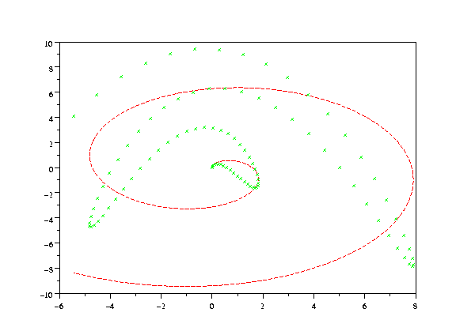
Le tireté utilisé pour le tracé des traits et la couleur
des marques ne peuvent être spécifiés que par
l'intermédiaire de la valeur dans le contexte. Les instruction suivantes
illustrent comment spécifier les paramètres caractérisant
le tracé des axes des fonctions plot2dx.
xset('background',33)
xset('foreground',34)
xbasc() ;plot2d(x,y2,style=5,axesflag=4)
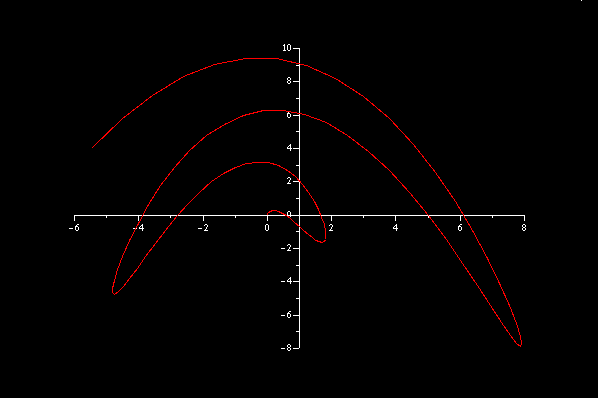
Ici la couleur du fond background et la couleur de tracé par
défaut foreground sont spécifiées dans le
contexte tandis que la couleur de la courbe et la définition des axes
sont définis par des arguments optionnels.
3.3 Ajout de ''décorations''
3.3.1 titres et légendes
x1=linspace(0,2*%pi,100) ;
xbasc() ;
plot2d(x1,10.^x1,style=5,logflag='nl')
legends(['10^x'],5,1) //ajoute un cartouche en haut à droite
//ajoute un titre et des étiquettes d'axes
xtitle('A linear/Log plot','x','y')
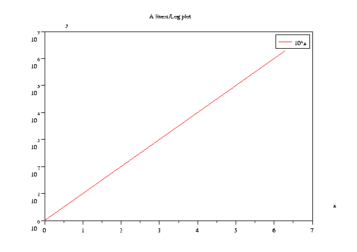
Noter aussi l'utilisation de logflag pour requérir l'usage de
coordonnées logarithmique le long de l'un ou l'autre des axes.
3.3.2 Axes particuliers
L'option axesflag=2 permet de supprimer le tracé par
défaut des axes, la fonction drawaxis permet de dessiner un axe
dont la position, l'orientation et les graduations sont définies par
l'utilisateur.
x1=linspace(0,2*%pi,100) ;
xbasc() ;plot2d(x1,sin(x1),style=5,axesflag=2)
drawaxis(dir='d',x=0:7,val=['a','b','c','e','f','g','h','i'])
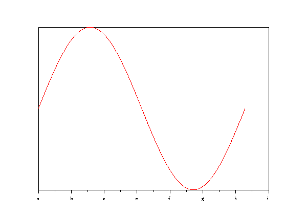
3.4 Autres fonctions graphiques utiles
3.4.1 Tracé de courbes en escalier
Le tracé de courbes en escalier est réalisable en utilisant la
variante plot2d2 de la fonction plot2d comme illustré
ci-dessous :
x1=linspace(0,2*%pi,30) ;
xbasc() ;plot2d2(x1,sin(x1),style=3)
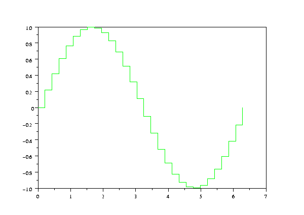
3.4.2 Représentation par barres verticales
La représentation des données par des barres verticales peut
être obtenue grâce à la fonction plot2d3 variante
de plot2d
x1=linspace(0,2*%pi,30) ;
xbasc() ;plot2d3(x1,sin(x1),style=3)
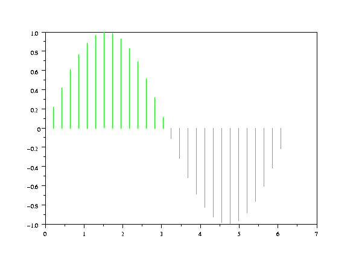
3.4.3 Tracé d'histogramme
La fonction histplot calcule et dessine l'histogramme à n
classes d'un vecteur de données.
x=rand(1,3000,'normal') ;
xbasc() ;histplot(100,x,style=2)
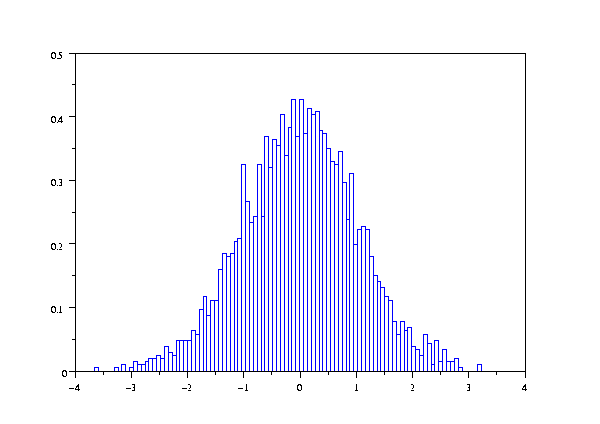
3.4.4 Coordonnées polaires
Ici nous dessinons des graphes de fonctions où les points sont
donnés par leur rayon r et leur angle
q.
t= (0:.01:2*%pi)'
xbasc() ;polarplot([sin(7*t') sin(6*t')],[cos(8*t') cos(8*t')],[1,2])
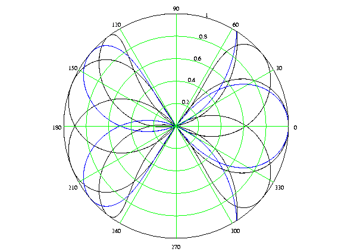
3.5 Visualisation Isométrique
Par défaut la transformation de coordonnées fait correspondre le
rectangle de coordonnées utilisateur avec les points extrêmes de
la (sous-)fenêtre graphique. Si vous souhaitez, par exemple, qu'un cercle
soit visualisé comme un cercle et non comme une ellipse vous devez
utiliser l'option frameflag=4 dans les paramètres d'appels des
fonctions plot2dx
t=linspace(0,2*%pi,100) ;
xbasc() ;plot2d(sin(t),cos(t))
xbasc() ;plot2d(sin(t),cos(t),frameflag=4)
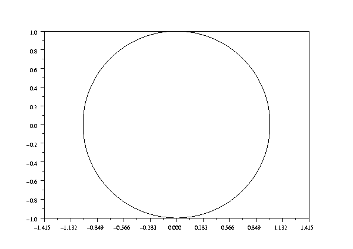
Même si l'utilisateur modifie les dimensions de la fenêtre, le
cercle reste visualisé comme un cercle !, les bornes utilisateurs sont
automatiquement élargies pour garantir une visualisation
isométrique.
4 Tracés en 3D
4.1 Les fonctions fplot3d et plot3d
4.1.1 Surface définie par une fonction
z=F(x,y)
Dessinons tout d'abord une surface définie par une fonction Scilab :
function z=f(x,y),z=(2*x^2*y+y^2)/(x^2+2*y^2),endfunction
x=-7:0.55:7;
xbasc();fplot3d(x,x,f)
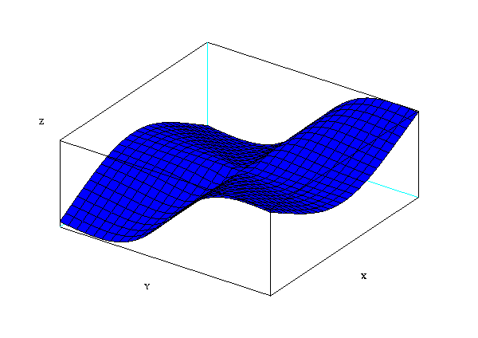
La couleur de la surface visible est par défaut la couleur numéro
2. Cette valeur peur être changée par l'intermédiaire du
permier élément du paramètre optionnel flag.
xbasc();fplot3d(x,x,f,flag=[3,2,2])
Le second et troisième élément de flag
controllent respectivement les bornes et le mode de tracé des axes.
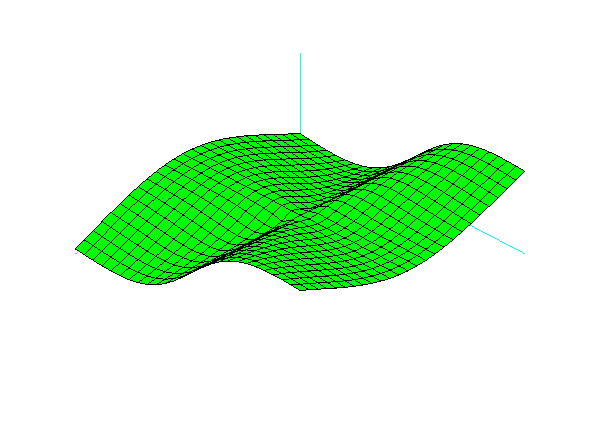
Le menu ``3D Rot.'' permet de changer les angles de vue q et a
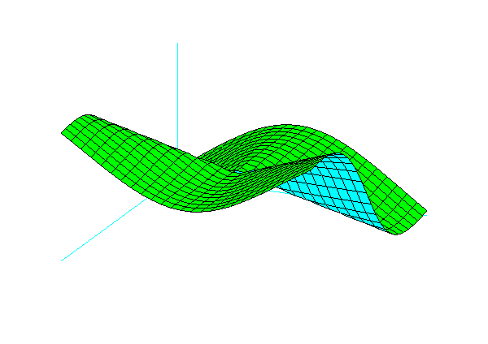
La même rotation aurait pu être réalisée en
spécifiant les paramètres optionnels theta et
alpha
fplot3d(x,x,f,theta=115,alpha=63,flag=[3,2,2])
La surface peut aussi être représentée par deux vecteurs
x et y donnant les discrétisations le long des axes
des abscisses et des ordonnées et une matrice z telle que
z(i,j) est l'élévation au point (x(i),y(j)). La
surface definie par la fonction f ci-dessus peut-être
représentée par la matrice z calculée comme suit
:
z=feval(x,x,f);
ou plus éfficacement en utilisant les opérateurs sur les matrices
par
Y=ones(x')*x ;X=x'*ones(x);
z=(2*X.^2 .*Y+Y.^2)./(X.^2+2*Y.^2) ;
Le dessin de la surface ainsi représentée peut être
réalisé en utilisant la fonction plot3d au lieu de
fplot3d.
xbasc();xset('color',5) ;xset('hidden3d',24) ;
plot3d(x,x,z,theta=115,alpha=63)
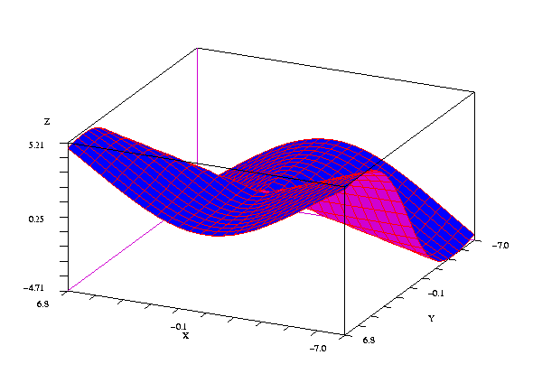
Ici on peut voir que la couleur courante du contexte est utilisée pour
dessiner le ``quadrillage'' et que la couleur associée au champ
hidden3d est utilisée pour colorier la ``face
inférieure'' de la surface.
4.2 Les autres fonctions 3D
4.2.1 Colorier les surfaces en fonction de
l'élévation
On utilise la table de couleur hotcolormap de la manière
suivante :
xset('colormap',hotcolormap(128))
xbasc();plot3d1(x,x,z)
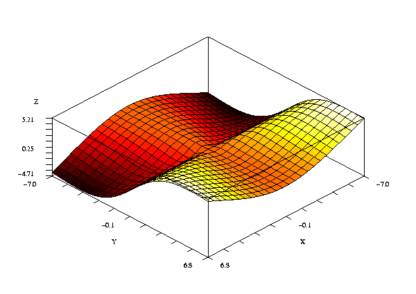
4.2.2 Représentation 2D des fonctions 3D
Dans cet exemple, les valeurs de la matrice z sont
représentées par des couleurs.
xbasc();grayplot(x,x,z)
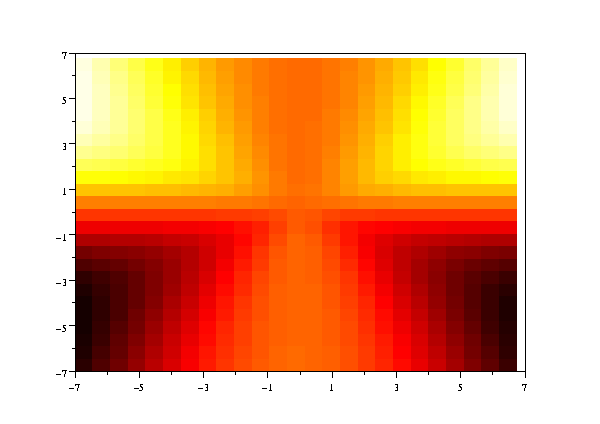
Ajoutons les courbes iso-valeurs :
contour2d(x,x,z,10)
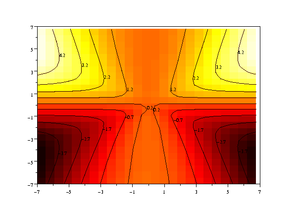
4.2.3 Valeurs non définies
Les valeurs non définies sur une surface peuvent être
représentées par des valeurs %nan dans la matrice
z :
z(10 :15,17:22)=\%nan ;
xbasc() ;plot3d1(x,x,z)
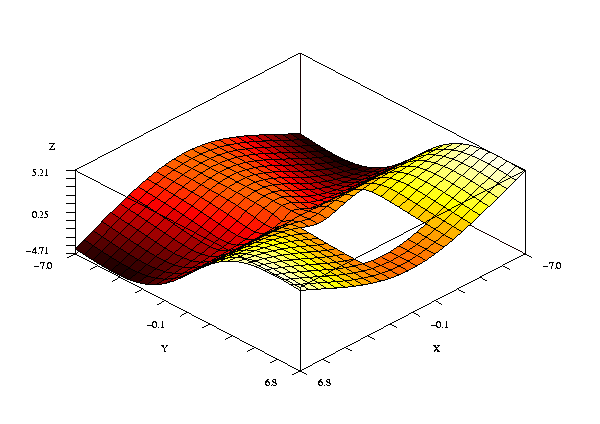
Les valeurs %nan produisent un trou dans la surface
4.2.4 Représentation par facettes
Les représentations x,y,z ou x,y,f ne permettent pas
de dessiner des surfaces complexes. Ce type de surfaces peuvent être
décrits par un ensemble de facettes : Dans l'exemple ci-dessous nous
représentons la surface précédente avec une sphère
posée dessus. La fonction genfac3d calcules la
représentation par facettes de la surface donnée par
x,y,z. Cette représentation est retournée dans trois
matrices xx,yy,zz. xx(:,i),yy(:,i),zz(:,i) definit la
ième facette. La fonction sph calcule les coordonnées
cartésiennes d'un ensemble de points de la surface d'une sphère
étant donné leur coordonnées sphériques. La
fonction eval3dp appelle la fonction sph pour créer
l'ensemble des facettes représentant la sphère.
[xx,yy,zz]=genfac3d(x,x,z);
function [x,y,z]=sph(alp,tet)
x=r*cos(alp).*cos(tet)+orig(1)*ones(tet);
y=r*cos(alp).*sin(tet)+orig(2)*ones(tet)
z=r*sin(alp)+orig(3)*ones(tet)
endfunction
r=2;//le rayon de la sph\`ere
orig=[-3 3 7/3+r];//le centre de la sph\`ere
[xx1,yy1,zz1]=eval3dp(sph,linspace(-\%pi/2,\%pi/2,20),linspace(0,\%pi*2,20));
L'association des deux surfaces s'effectue alors en concaténant les deux
ensembles de facettes.
X=[xx,xx1] ;
Y=[yy,yy1] ;
Z=[zz,zz1] ;
les fonctions plot3d et plot3d1 peuvent ensuite être
utilisées pour visualiser les surfaces.
xbasc() ;plot3d1(X,Y,Z,flag=[-1,4,4])
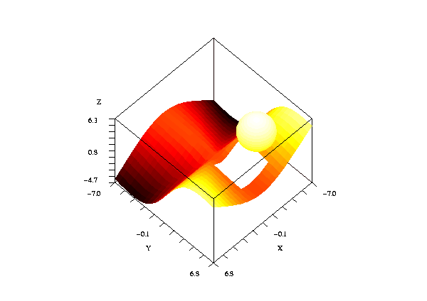
Noter ici la première composante de flag positionnée a
-1 pour demander l'interpolation des couleurs des facettes au lieu du
mode par défaut qui alloue une seule couleur par facette.
5 Entrées graphiques
5.1 Acquisition des coordonnées d'un point
Il est souvent nécessaire pour construire des applications de pouvoir
acquérir les coordonnées utilisateurs associées à
un point de la fenêtre graphique. Ceci peut être fait grace
à la fonction xclick.
xbasc() ;plot2d()
[btn,x,y]=xclick()
Appelé avec 3 arguments à gauche la fonction xclick
attend un click de souris dans la fenêtre graphique courante et retourne
le numéro du bouton (0,1 ou 2) et les coordonnées x et
y du point sélectionné. Il est aussi possible d'attendre
un clic dans n'importe laquelle des fenêtres ouvertes :
[btn,x,y,win]=xclick()
Ici l'argument supplémentaire win contient le numéro de
la fenêtre où le point a été
sélectionné.
5.2 Suivre la souris
La fonction xgetmouse permet de récupérer la position de
la souris dans la fenêtre courante. Ici il n'y a pas besoin de cliquer,
chaque fois que la fonction est appelée et que la souris a bougé
la fonction retourne la nouvelle position.
xset('window',0)
while \%t
rep=xgetmouse() ;
plot2d(rep(1),rep(2),-3)
if rep(3)==2 then break,end
end
Ce petit script dessine une
marque à chaque position successive de la souris.
6 Exporter/Publier
6.1 Editeur graphique gr_menu
gr_menu est une petit outil Scilab qui permet d'ajouter des objets
graphiques (flèches, rectangle, cercle, texte, ...) en utilisant la
souris et des menus. Cette fonction est écrite en Scilab en utilisant
les entrées graphiques présentées ci-dessus.
xbasc() ;plot2d()
sd=gr_menu() ;
Le dessin suivant montre la fenêtre graphique avec les menus ``objects''
``settings'' and ``edit'' de l'outil gr_menu. Ces menus ont
été utilisés pour ajouter la flèche rouge et la
légende ``sin(x)''. La fonction gr_menu retourne une
structure de données sd
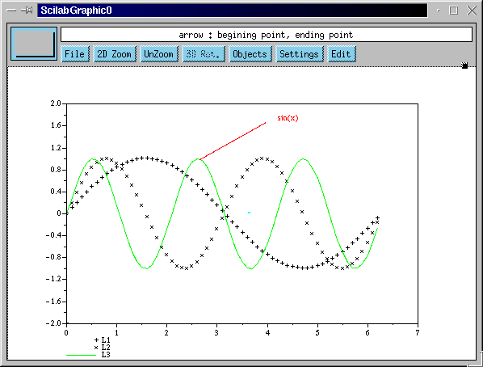
La structure de données sd peut être traduite en
instructions Scilab :
-->sd2sci(sd)
ans =
!xsetech([0 0 1 1],[0,0,100,100]) !
! !
!xset('pattern',7) !
! !
!xarrows([63.8;38],[92;75],-1,-1); !
! !
!xstring(67.1,90.3,'sin(x) ',0,0); !
6.2 Exporter avec Xfig
Xfig est un utilitaire Unix similaire a gr_menu mais beaucoup plus
développé. Par exemple le dessin généré par
:
p=linspace(0,10,100) ;
x=p.*sin(p) ;
y=p.*cos(p) ;
xbasc() ;plot2d(x,y)
peut être exporté au format Xfig avec :
driver('Fig') ;xinit('foo.fig') ;xtape('replay',0) ;xend()
La même chose peut être réalisée plus simplement avec
le menu ``File/Export'' L'instruction Unix ci-dessous :
xfig foo.fig
ouvre l'éditeur graphique, montré ici avec le menu
d'édition de courbe ouvert
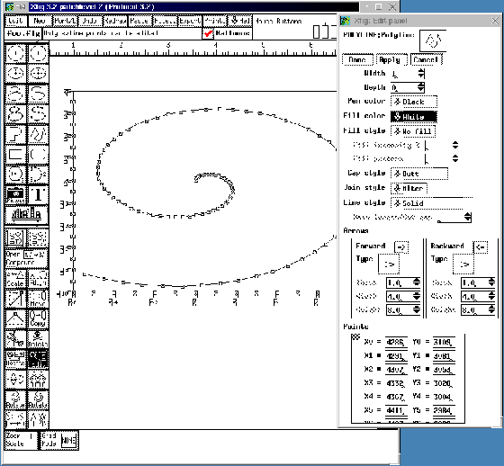
Les graphiques peuvent aussi être exportés en postscript pour
être inclus dans des documents Word ou LaTeX ou en format Gif qui est
adapté aux documents HTML et Word.
Vous pouvez retrouver les exemples ici.
Serge Steer & la société Saphir Control
INRIA Rocquencourt BP105, 78153 Le Chesnay Cedex, France
Serge.Steer@inria.fr, www.saphir-control.fr
This document was translated from LATEX
by HEVEA.